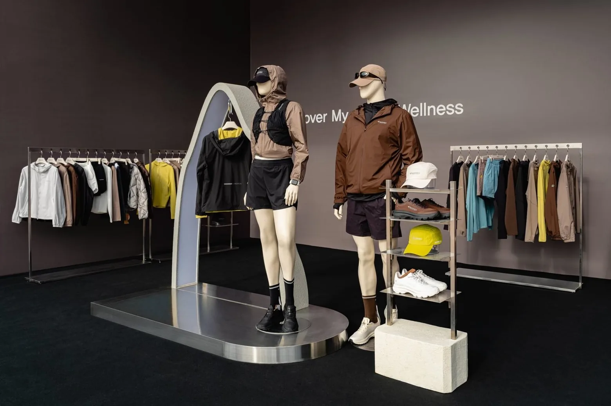

NEW SOURCE
MEDICUBE / MEDIA COMMUNICATION
콘텐츠 기획과
매체 운영
매체별 소재를 기획하고,
캠페인의 실행 조건을 조율합니다.
이난주
메디큐브 국내 미디어 커뮤니케이션 지원

PROFILE
F&F에서 맡은 일
매체별 콘텐츠와 셀러브리티 캠페인,
쇼룸 운영을 담당했습니다.
F&F | 브랜드 마케터 · 대리2021.10 — 재직 중
DISCOVERY EXPEDITION
DUVETICA
SERGIO TACCHINI
SUPRA
SELECTED WORKS
실제 사례와 직접 담당 업무2026.09.19
시포레
RUN&FIT
일산 호수공원
행사 커뮤니케이션과현장 콘텐츠 연계
현장과 온라인의 반응
현장 참여, 소셜, 자사몰과 상품 반응을 함께 검토해 후속 시즌 방향을 정리했습니다.
[입력 필요] 빌리 콘텐츠의 형식, 채널과 직접 담당 단계
2026.04.28 / 성수 쎈느
액티브 웰니스를
쇼룸과 콘텐츠에
Discover My Active Summer
직접 담당
쇼룸 운영과 콘텐츠 실행을 맡아 유관부서 및 매체와 협업해 메시지와 비주얼을 조율했습니다.
행사 결과 취합과 보고까지 담당[입력 필요] 직접 결정한 운영 사항과 반영 결과
2026 SS / 닝닝 유료 디지털 매거진
매체의 관심사로 나눈 소재
매체별 소재 기획과 집행 조건 협의
EYESMAG
메리제인 슈즈와 착장
FASTPAPER
팬덤과 여름 관심사
시장과 관심 키워드를 분석해 소재를 나누고, 집행 후 노출과 상품 반응을 검토했습니다.
[입력 필요] 정확한 집행일과 상품 반응의 집계 기준
2024 FW / DUVETICA
앰버서더와
팝업의 실행 조율
앰버서더 선정과 채널 검토
KPI와 예산 수립
제작과 노출 일정 관리
유관부서와 대행사 협업
2025년 상반기BEP 개선에 기여
SERGIO TACCHINI / 진행일 확인 중
한남 플래그십의
행사와 프로모션 기획
행사 타임라인과 운영 프로세스를 정리하고, 협업 사은품과 AI 포토부스 프로모션을 기획했습니다.
지역 공간과 온라인 채널을 연계했습니다.
[입력 필요] 수행 기간, 직접 조율한 파트너와 프로모션별 결과
MEDIA OPERATIONS
반복 집행을 패키지로 묶어
단가와 노출 조건을 협의했습니다
4회
패키지로 구성
조건 협의, 일정 조율,
집행과 정산 관리
건별 광고 비용 절감
해당 광고 집행 기준
해당 매체의 연간 광고비 절감
ANALYSIS & REPORTING
보고 준비 기간을 줄인 분석 기획
2주→3일
분석 요건
KPI
조회 화면 기획
필요한 지표와 조회 방식을 먼저 정의했습니다
데이터팀과 협업해 조회 화면을 기획하고, 2주마다 반응을 검토해 콘텐츠와 시딩 전략을 제안했습니다.
데이터팀 담당데이터 적재,
접근 권한과 보안 관리
메디큐브 / 입사 후 실행 제안
제품 메시지와 근거를 정리하고,
매체 독자의 관심사에 맞는
피칭 소재를 준비하겠습니다

행사와 콘텐츠는 메시지와 일정을 함께 조율하고,
발행 후에는 노출과 반응을 구분해 다음 제안에 반영하겠습니다.
이난주
작성용 보완 항목
직접 수행 내용 확인
확인되지 않은 개인 역할과 결과는 입력 항목으로 남겼습니다.
Winter BaseCamp
행사 전, 당일, 이후 직접 업무 / 본인의 결정과 이유 / 대표 결과물과 공개 가능한 결과
RUN&FIT 빌리 콘텐츠
실제 형식과 발행 채널 / 기획, 촬영 진행, 검수, 발행 중 맡은 단계 / 결과물
리센느 및 커플 화보
각 프로젝트의 협업 매체 / 직접 역할과 반영된 제안 / 촬영일과 발행일 / 대표 화보
성수 쎈느 쇼룸
직접 결정한 운영 사항 / 선택 이유 / 실제 반영 내용과 결과
닝닝 및 세르지오
정확한 수행 기간 / 직접 조율 내용 / 결과의 집계 범위와 근거
변우석 화보 비하인드
2026년 콘텐츠 확보 업무 수행. 촬영일, 연계 캠페인, 확보 소재와 활용 채널 입력 필요.